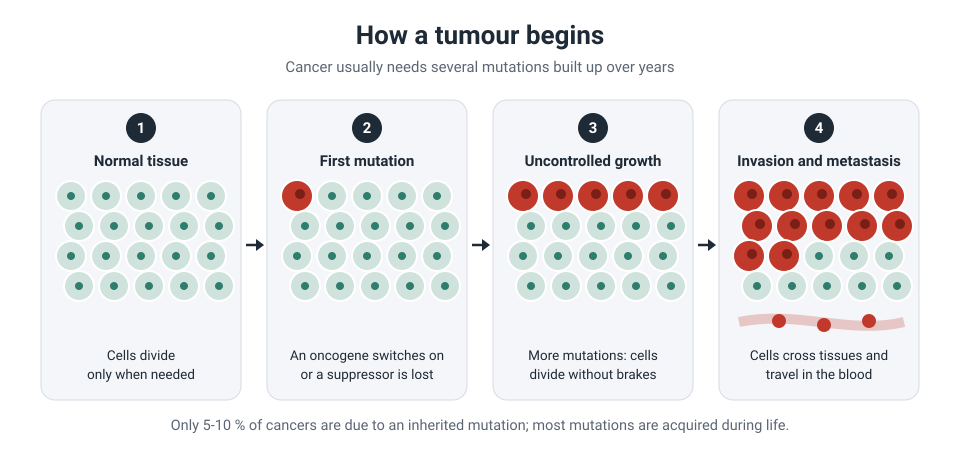

General information only. It does not replace advice from a health professional or genetic counselling.
At a glance
| What it is | A group of cells that divide out of control and invade other tissues |
| Underlying cause | Changes in a cell's DNA that build up over the years |
| Inherited | Only 5–10 % of cancers have a clear hereditary cause |
| Key genes | Oncogenes (accelerators) and tumour suppressor genes (brakes) |

Cancer is a genetic disease, but not a hereditary one
Saying that cancer is a disease of the genes surprises many people, because most tumours do not appear in other family members. The key is to distinguish between two kinds of DNA change:
- Germline variants: present in the egg or sperm that formed us, and therefore in every cell of the body. These are inherited and passed on to children. They account for only 5–10 % of cancers, such as those linked to BRCA1 and BRCA2 or Lynch syndrome.
- Somatic variants: arise during life in a single cell and its descendants. They are neither inherited nor passed on. They cause the vast majority of tumours.
Every time a cell divides it copies its 6 billion letters of DNA, and although the copying machinery is very accurate, some errors slip through. Added to this is damage from tobacco, ultraviolet radiation, alcohol, certain viruses such as human papillomavirus, and simply the passage of time. This is why cancer is much more common in older people: they have had more years to accumulate errors.
Accelerators and brakes
Healthy cells divide only when told to, and stop when they should. This control depends on two large families of genes:
- Oncogenes: in their normal form (proto-oncogenes) they give the order to grow. When a variant leaves them permanently "switched on", they act like a stuck accelerator. A change in one of the two copies is enough. Examples: KRAS, EGFR, HER2 (ERBB2) and MYC.
- Tumour suppressor genes: they brake division, repair DNA or make a damaged cell self-destruct (apoptosis). To stop working, both copies usually have to fail. Examples: TP53, RB1, APC, BRCA1 and BRCA2.
In 1971 the paediatrician Alfred Knudson studied retinoblastoma, a childhood eye tumour, and proposed the two-hit hypothesis: children with the hereditary form are born with one hit already in the RB1 gene and need only a second hit in one eye cell, which is why they develop tumours earlier and in both eyes. Children with the sporadic form need two hits in the same cell, which is far less likely. This idea explains why people with an inherited variant in a tumour suppressor gene have such a high risk.
A process in several steps
A tumour does not appear all at once. In bowel cancer, Bert Vogelstein and his team described a typical sequence in the late 1980s: a variant in APC produces a small polyp, then KRAS makes it grow, and loss of TP53 turns it into an invasive cancer. The process usually takes 10 to 15 years, which is why colonoscopy screening works: polyps can be removed before they become malignant.
Most solid tumours have from a few dozen to several hundred variants, but only a few, called driver variants, actually push the cancer forward. The rest are passengers: errors the cell carries along without consequence.
The capabilities of cancer
In 2000 Douglas Hanahan and Robert Weinberg summarised what a cell needs to become a cancer in a list of "hallmarks", which they expanded in 2011 and 2022:
- Sustaining its own growth signals.
- Ignoring signals that halt division.
- Resisting programmed cell death.
- Dividing without limit, avoiding telomere shortening.
- Building new blood vessels to feed itself (angiogenesis).
- Invading nearby tissues and spreading to distant sites (metastasis).
- Changing its metabolism and evading the immune system.
Behind many of these capabilities lies genomic instability: when the genes that repair DNA fail, errors build up much faster. This is what happens in Lynch syndrome or with BRCA.
One tumour, many populations
A tumour is not a uniform block. As it grows, its cells keep acquiring changes and form distinct subpopulations, just as species evolve through natural selection. This heterogeneity explains why a treatment can work at first and then stop: cells that by chance carried a resistance variant survive and grow back.
Why the tumour's genes matter
Today tumours are studied with sequencing panels that look for driver variants. These are used to choose targeted treatments, explained in precision oncology, and to monitor the disease with liquid biopsy. Sometimes testing the tumour reveals a variant that is also present in the blood, meaning it is inherited, and genetic counselling is then offered to the family.
What can be done
Because most cancers depend on accumulated errors, prevention remains very effective: not smoking, protecting yourself from the sun, limiting alcohol, keeping a healthy weight, being vaccinated against human papillomavirus and hepatitis B, and taking part in screening programmes for breast, bowel and cervical cancer.
See also: Hereditary cancer, Mutations and variants and Genes and environment.
Sources
- Hanahan D, Weinberg RA. Hallmarks of cancer: the next generation. Cell. 2011;144(5):646-674. doi:10.1016/j.cell.2011.02.013
- Hanahan D. Hallmarks of cancer: new dimensions. Cancer Discov. 2022;12(1):31-46. doi:10.1158/2159-8290.CD-21-1059
- Knudson AG. Mutation and cancer: statistical study of retinoblastoma. Proc Natl Acad Sci USA. 1971;68(4):820-823. doi:10.1073/pnas.68.4.820
- Vogelstein B, Papadopoulos N, Velculescu VE, Zhou S, Diaz LA, Kinzler KW. Cancer genome landscapes. Science. 2013;339(6127):1546-1558. doi:10.1126/science.1235122